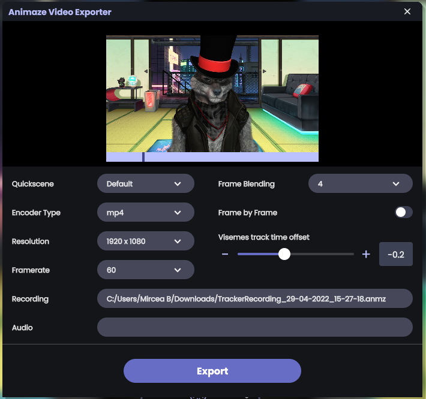
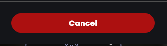
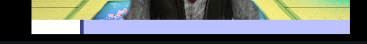

Offline video export
The offline video export is currently the best option for video content creation in Animaze as it allows configuring common parameters like resolution and framerate. Also, three additional features set this option apart from the other recording solutions:
-
Cinematic motion blur through Frame Blending - Animaze will render a number of subframes between two main frames and blend the subframes together to create a motion blur effect.
-
Visemes track time offset - synchronize the audio-based lipsync with face tracking and the actual audio.
-
Ability to export the same movement on different avatars with help of the two-step creation pipeline, first you record mocap data, then export a video with that data applied on whatever avatar is needed. The second step can be repeated with the same mocap data file recording in the first step.
|
Note! The output video may exhibit an audio video desynchronization. While we are working on finding a suitable solution for this issue, you can manually synchronize the audio in a video editing tool. The export also provides the audio (wav format) in clean form and with voice effects (if selected) so you can use either audio on a separate track. |
Overview
The offline video export is a two-step video creation process, firstly you record mocap data, which means you record the avatar movement in an avatar-agnostic format (.anmz file format), then export the video with the mocap data previously recorded.
Steps
1. Open “Screen Capture & Record” panel from the burger button on the “Enable Virtual Camera” button
2. Start recording the mocap data by clicking the “Record Mocap Data” button on the newly opened panel

3. Stop recording the mocap data when done by clicking the “Stop” button

4. Now, you are prompted to save the recording data (that can be exported later) or directly go to the video exporter. For simplicity, we’ll go with the “Export as video” option, which will open the Animaze Video Exporter dialog.

5. Clicking “Export as video” will prompt a file dialog where to save the current mocap data recording.
6. Now we should be in the Animaze Video Exporter dialog in which we can control a few important parameters.


7. Change the options to these recommended ones:
a. Encoder Type set to “mp4“
b. Resolution can go up to the maximum resolution the GPU supports, on modern hardware, we should be able to go up to 4K (3840x2160). A higher resolution means a larger video file.
c. Framerate set to 60 (can go up to 240). A higher refresh rate means a larger video file.
d. Frame Blending set to 4 or 8 is a nice balance between quality and export time. This process is very time costly.
e. for simplicity, we’ll leave the other options to their default values
8.Hit the “Export” button. This will prompt a file dialog where to save the video and then the video export process begins. Note, this may take a while.
9.Video export is done when the “Cancel“ button turns into “Export” again and the progress bar fill completely

the cancel button


the progress bar
The video should now be saved in the location set at Step 8.